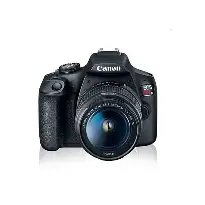
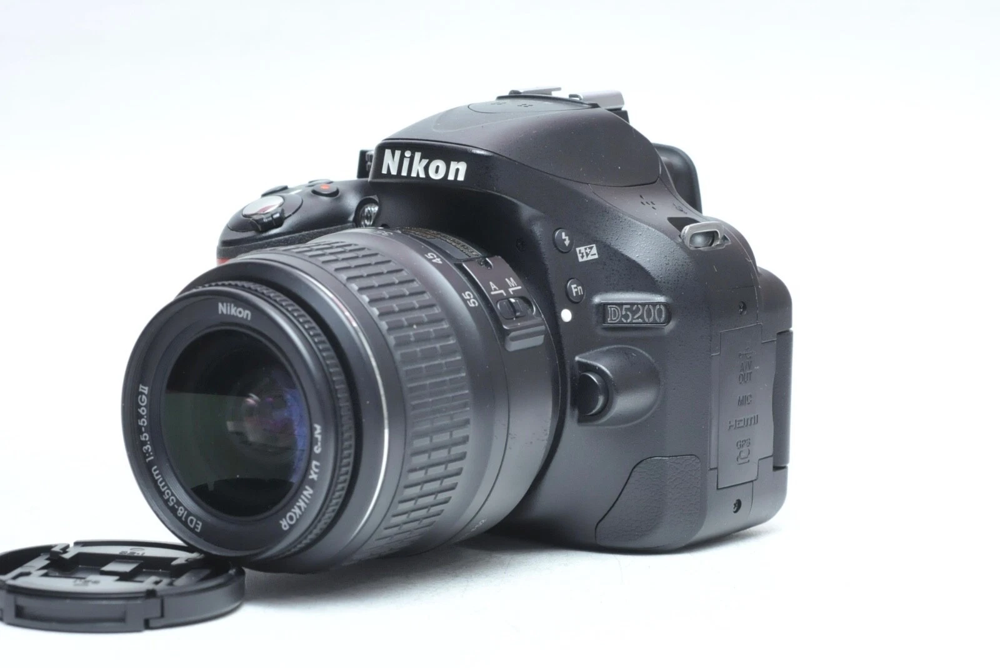
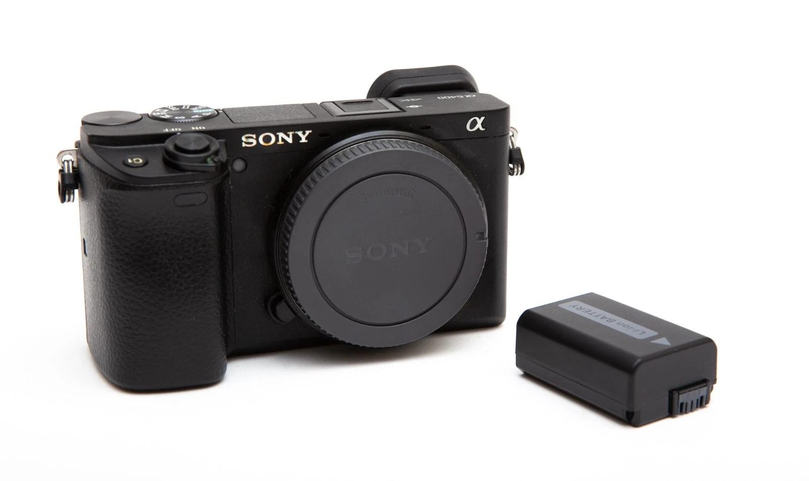
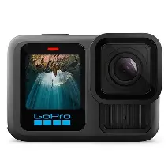
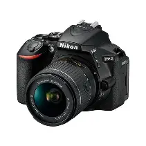
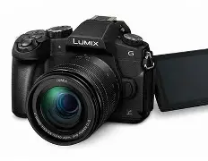
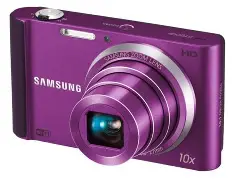

Canon EOS Rebel T8i
- Sensor: APS-C de 24.1 MP
- Video: 4K UHD
- ISO: 100-25600
- Enfoque automático: 45 puntos
- Pantalla: LCD articulada de 3"

Nikon D5600
- Sensor: APS-C de 24.2 MP
- Video: Full HD 1080p
- ISO: 100-25600
- Enfoque automático: 39 puntos
- Pantalla: LCD táctil de 3.2"

Sony Alpha a6400
- Sensor: APS-C de 24.2 MP
- Video: 4K UHD
- ISO: 100-32000
- Enfoque automático: 425 puntos
- Pantalla: LCD táctil inclinable de 3"

GoPro HERO9 Black
- Sensor: 20 MP
- Video: 5K UHD
- ISO: 100-6400
- Estabilización: HyperSmooth 3.0
- Pantalla: LCD frontal y trasera

Nikon Z50
- Sensor: APS-C de 20.9 MP
- Video: 4K UHD
- ISO: 100-51200
- Enfoque automático: 209 puntos
- Pantalla: LCD táctil inclinable de 3.2"

Panasonic Lumix G85
- Sensor: Micro Cuatro Tercios de 16 MP
- Video: 4K UHD
- ISO: 200-25600
- Enfoque automático: 49 puntos
- Pantalla: LCD táctil articulada de 3"

Samsung NX500
- Sensor: APS-C de 28 MP
- Video: 4K UHD
- ISO: 100-25600
- Enfoque automático: 205 puntos
- Pantalla: LCD táctil inclinable de 3"